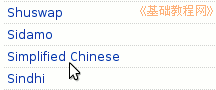

电脑操作基础
作者：TeliuTe 来源：基础教程网
二十九、Launchpad 翻译指南 返回目录 下一课Launchpad 网站上可以在线翻译，并且可以很方便地合作、学习、参考其他人的翻译，下面我们来看一个练习；
1、注册和登录
1）先注册一个用户名，点击进入：https://translations.launchpad.net/ubuntu/
在右上角找到 Log in/ Register 链接，点击进入；
2）在出来的页面里，在下面输入自己的邮箱，这个以后会作为登录名称；
3）点下面的 Register 按钮开始注册，提示系统给你发送了一封邮件；
4）登录自己注册的邮箱，找到一封来自 Launchpad 的邮件，打开找到里面的链接；
5）点击链接进行验证，出来继续注册页面，也可以把链接复制到地址栏，然后点转到按钮；
6）输入一个用户名，密码输入两遍相同的，然后点 Continue 按钮提交，完成后右上角出现自己的用户名，注册成功；
7）以后在右上角点登录时，在第一个“已经注册”里输入自己的邮箱地址、密码，然后点“Log In”就可以登录；
2、个人设置
1）注册成功以后在右边的“Your languages”里点“Select Languages...”，选择中文的 Simplified Chinese
2）其他资料也可以试着修改，拿不准的先看看；
3）加入中文小组，点击进入： https://launchpad.net/~ubuntu-l10n-zh-cn
在下面找到 “Join this team” ，点击就可以申请加入中文小组，也可以再看看里面的翻译规范；
3、翻译软件包
1）注册成功后就可以开始翻译了，进入网址：https://translations.launchpad.net/ubuntu/ ，在列表里找到 Simplified Chinese

2）点击进入以后，会有许多软件包列表，后面的颜色是翻译进度，红色表示未翻译的，

点右上边或下边的 Next 可以看下一页的内容；
3）找一个没翻译的软件包名称上点一下，进入翻译页面，找到 (no translation ye) 上的；
4）在下面的 New translation: 文本框里输入自己的中文翻译；
5）挨着序号往下翻译，当一页的内容都翻译好了，点右下角的保存并继续按钮 “Save & Continue”，
注意翻译了一定要点这个按钮保存；
6）如果拿不准的可以打勾下面的“Someone should reciew this translation”，这样的还算作未翻译，但别人可以参考或修改一下；
7、翻译格式，中英文之间用空格分开，用“您”而不是“你”，括号用英文的，可以多看看其他人的翻译或发帖询问；
4、其他操作
1、在左上边有一个Translating 下拉列表，点击可以快速找出那些是未翻译的，选择后点后面的“Change”按钮；
2）右边的搜索框里，可以查找包里的某一个词语，找到左边的序号，然后修改地址栏中地址的最后的 start，来定位这一句的上下文；
https://translations.launchpad.net/ubuntu/.../zh_CN/+translate?start=709
3）翻译页面上面有一排按钮，点右边的 “Download”，可以下载这个软件包的 Po 格式包，然后带回去翻译；
4）点左边的“Description”，可以看一下哪些人翻译了这个软件包，以及包的翻译情况；
其他方面可以边翻译、边学习，也可以到Ubuntu 中文论坛的翻译版看看；
http://forum.ubuntu.org.cn/viewforum.php?f=17
本节学习了在 Ubuntu 中翻译软件包的基本操作，如果你成功地完成了练习，请继续学习下一课内容；
本教程由86团学校TeliuTe制作|著作权所有
基础教程网：http://teliute.org/
美丽的校园……
转载和引用本站内容，请保留版权信息和本站链接。